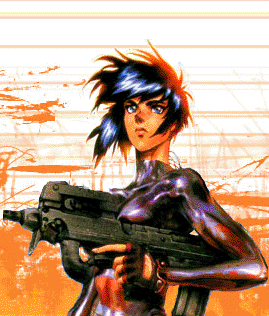
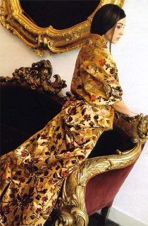
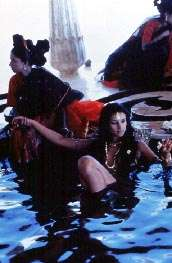

hadowrun
je RPG hra zasazena do prostredi imaginarnich mest v dobe priblizne
okolo roku 2050-2065.
Magie se vratila do sveta, nekteri lide a zvirata a rostliny
zmutovali do podoby bajnych tvoru (orkove trpaslici, trolove, elfove,
draci...), jini vylepsuji sve telo chromem, oceli nebo
nanotechnologiemi.
Zmutovaly take nemoci, vratil se mor. EU i USA se rozpadly na male staty, ovladane korporacemi, mafiemi, nebo samozvanymi vladami. Viry suzovany Internet se postupne zmenilna ve virtualni realitu zvanou MATRIX, ve ktere protekaji megaterabajty informaci za vterinu.
Typicke hracske postavy jsou lide nebo metalide ve stinech, osoby, ktere ziji spinavou praci. Odprodeje drog, pres zabijeni a vydirani, az po "kladne" hrdiny bojujici proti znecistovani
planety a rasovemu utlaku...
>>>>["Chces si hrat na stiny?
Tak teda poslouchej, kamo; pak si to preber a pouc se z toho co nejvic,
ponevadz nevedomost zabiji rychlejc nez kulovej blesk."]<<<<
~ Ess El El, hadi saman <18:12:45/11-O7-42>
>>>>[SHA-DO-RUN : vytejte ve svete zvrhlych elfu, drubezich samanu a neschopnych riggeru.]<<<<
~ Sorbak, the gamemaster <15/09/04 00:38:40>
Postavy, ktere hrajeme (PC)
 Thomas Tamavenk
- trollim rodicum narozeny troll. Otec technik, jej vzdy vedl ke kutilstvi pro ktere mel mlady velke nadani. Schopnost najit a opravit chybu temer v jakemkoli mechnickem nebo elektronickem zarizeni, byla v uz v Tomovych patnacti temer zazracna. Kdyz se potom otec i se starsim bratrem zabili v aute, dostal se Tom do stinu, kde se pokousi uzivit svou technickou zrucnosti.
Jasmina Amirah Shaharazad aka Nova - puvodnim urcenim : konkubina vlady Damasku, specializovana na spionaz.
Thomas Tamavenk
- trollim rodicum narozeny troll. Otec technik, jej vzdy vedl ke kutilstvi pro ktere mel mlady velke nadani. Schopnost najit a opravit chybu temer v jakemkoli mechnickem nebo elektronickem zarizeni, byla v uz v Tomovych patnacti temer zazracna. Kdyz se potom otec i se starsim bratrem zabili v aute, dostal se Tom do stinu, kde se pokousi uzivit svou technickou zrucnosti.
Jasmina Amirah Shaharazad aka Nova - puvodnim urcenim : konkubina vlady Damasku, specializovana na spionaz.
V dnesni dobe furie posedla touhou po pomste na organizaci, ktera zabila jeji rodice. Luxusni prostitutka a tanecnice v klubu Dark Secret, manzelka Vlada Hromady.
Vlado Hromada - slovak, datovy prechovavac a paserak, gotic punker, masochista, fetak heroinu, alfa decker s mozkem plnym cyberware. Stastny manzel Jasminy Amirah Shaharazad.
Rufus (Sorbak) - Rastaman taxikar, bez cyberware, s sestiranym revolverem za opaskem. Neustale chvali Jehovu a zloreci Babylonu. V soucastne dobe NPC, ktere se v nejake male obmene vyskytuje v kazdem meste kde maji taxiky.
Urscumung (Sorbak) - RIP - ork. max power. Tohle je presne ten typ postavy, ktery si vytvori nekdo, kdo v DrD hrava barbarskeho zabijaka s kyjem. Tezky bojovy pancir, kulomet, 2 tezke pistole. Reflexka: 2. - v soucastne dobe RIP by Marty Casper.
Nick SlaughterHouse aka Polozmrd (Sorbak) - temny elf, lidsky pozer, masozrout, child killer, sberac vybavy, London City Kid, vyleceny kokainista a alkoholik.
John Viper (Sorbak) - 160 cm vysoky cernoch, saman hadiho totemu
Alan - (Mates) - RIP - Puvodne gang member archetyp. Neustale sjizdel BTL (better than life) chipy. Kdyz se GM zeptal co dela, odovidal pravidelne: "Ja? Ja si dam do hlavy dalsi cip."
Johny (Bota) - tichy, schopny a nenapadny kouzelnik se sklony k chaotickemu dobru
Nicolai Chauchesku (Balu) - rumunsky eko-punker, straslive rychly britvak
Marty Casper (Elf) - RIP - elf, umel odevseho kousek, ale nic poradne. Diky jedne nestastne prihode, byl znasilnen masovym vrahem a prisel o ruku. Tu nahradil kybernetickou protezou se kterou se vsak nikdy nesmiril. Miloval Ferrari, ale vzdy jej vcas rozmlatil. Vzdycky mlel o tom jak neco udela, ze to udela takhle a takhle, ale nerekl co vlastne udelat chce. Lama, co 3x spadne ze zebriku vedouciho na strechu, kdyz ostatni bojuji ve sklepe.
Dimitri (Elf) - zase jednen, co umi odevseho kousek, neustale mluvi o Velkem a Bohatem Bratru, nekde v Roztoku nad Donem, jako o pani Colombove. Pri jednadnani s kymkoli neustale prekracuje hranice dobreho chovani, coz spolecne s jeho relativne velkym bohatstvim (nemluve o tech peti mrtvej policajtech) nejspise brzy zapricini jistou nestastnou nahodu.
Eh... RIP by pachatel neznamy. Zemrel na jed.
Jose Armando - (Elf) - zda se, ze konecne jedna Elfova postava, ktera by mohla mit zivotaschopnost, tezko rict. Kazdopadne Madridsky kytarista, podomni prodavac domacich spotrebicu a zabijec psu. No neber to ne?
Mao-te (Slunko) - "drubezi saman" : "Ta moje postava je uplne na hovno, kdyz, vyvolam ducha, tak me zabije, neubranim se, protoze me sejme kazdej samuraj s reflexkama...". Neustale se menici, neustale nespokojeny, mnoho postav v jedne.
Garnath Langusra (Prawitz) - podivna postava, ktera by uz mohla byt povazovana za archetyp, arab s kalasnikovem a vybusninami ("Bylo by to uplne v pohode, kdybychom meli tank")
Tenochtitlan (Prawitz) - Child of nature, indian, vyhorely saman se sklony manipulovat vecmi pomoci magie, tak aby od nekud padaly, nebo o neco narazely.
("Tywole, ti samurajove jsou banda dementnich frenetiku.")
Ashitaka (Boxy) - Japonec, dealer chemikalii, zabijak. Nicmene predevsim velice schopny psycholog a organizator, cekatel na post alfa hackera.
Dulezite postavy, ktere ziji v nasem svete (NPC)
Timmy - nikdo vlastne nevi, co je to za cloveka, ale rika se, ze by se snad mohlo jednat o jakehosi fetaka, ze dvacateho stoleti, o nejakeho Learyho.
Timmy, je predevsim vedec, spicka v oblasti cyberware, hrana pokroku. Nikdo jiny nedokazal udelat to co on, tedy nahradit sve telo i casti mozku v takove mire a prezit to. Jeho hlavnim zdrojem prijimu, je pristroj -cyberneticka droga- zvany Drat, ktera se pripojuje primo k mozku a je pomoci ni mozne dosahnout v podstate jakehokli pocitu, ktery mozek dokaze zpracovat, vcetne vsech kombinaci.
Pro potreby naseho hrani, byla tato postava definovana jako nesmrtelna, nicmene po jiste serii akci, byl Timmy unesen, neznamou a velice mocnou organizaci a nikdo nevi, kde se v soucastne dobe nachazi jeho genialni mozek.
Packa - Timmyho pes, ceskoslovensky ovcak, ktereho Tim nasel umirajiciho na skladce, s rozdrcenou pateri, lebkou a packami. Protoze zrovna potreboval "dobrovolnika", pro sve pokusy s kosternimi implantaty a protoze Packuv mozek byl neporusen, rozhodl se mu zachranit zivot.
Pokusy se zdarily a Packa dostal nove telo. Je s podivem, ze serie experimentu, nezanechala na psi osobnosti, zadne vazne nasledky, podobne jako ani na jeho panu. Packa, se tedy stal Timmyho nejvernejsim pritelem a ochrancem a take potvrdil rceni "Jaky pan, takovy pes."
Narozdil od Timmotyho, se Packu podarilo zachranit i kdyz se ve velice zubozenem stavu, ktery snad bude jednou moct napravit jeho nezvestny pan.
Pan v cernem - archetyp agenta Smida, vsudypritomy, neustale se vyptavajici, nebezpecny. Zda se, ze prostupuji kazdou jednou akci, jako zastupci jakesi nezname organizace, kterou pred nekolika lety nevedomky napadli zakladajici clenove shadowrunnerskeho tymu.
Je temer jiste, ze prave oni maji prsty ve zmizeni Timmotyho.
Cerni orkove - archetyp vojaka, at jiz magicky aktivniho, nebo dokonale vylepseneho cyberware. Velice nebezpecna soucast hierarchie, one organizace, jejimiz prislusniky jsou i pani v cernem.
Nekdo dalsi? - zda se, ze vsechno smeruje k jakymsi vyssim planum. Pro koho a proc neni zatim uplne jasne. Neni ani jasne, jestli se vubec tyto plany tykaji naseho teamu, nebo jestli neni tento, spise okrajovym problemem, bytosti, ktere maji moc.
Divka se stribrnyma ocima (Kahira), Lizzy aka 97 Urscumungova (Seattle), eBony Clide (London)... - dohazovaci, lide i nelide, kteri obcas neco vedeli a toto sve poznani byli ochotni poskytnot za jisty drobny uplatek postavam...
Spatny Zpravy - archetyp vyhazovace, v kazdem podniku, kde je jej treba.
Irving - starej zid, ktery snad v kazde zemi sveta, v kazdem meste a v kazdou hodinu prodava za starou mechanickou kasou alkohol, uplne komukoli.
Mista
Dark Secret - nejlepsi a nejdrazsi bordel v Londnu, s kompletnim servisem bez ohledu na rasy a pohlavi. Pokud dokazete zaplatit dost, neexistuje bezpecnejsi misto ve meste. Take velice draha a diskretni kosmeticka klinika.
Yoshimotova opravna hi-tech - podivne misto kdesi v Londnu, kde pry opravi cokoli, cena zavisi na rychlosti a kvalite, jako ostatne vzdycky
Costa -Kosteny- kafe - kdysi soucast site kavaren Costa Kafe, ne nepodobnych McDonalds, po jejim rozpadu unikatni matrixova kavarna s neregistrovanymi pripojkami (trix: 1Y/1s)
Jméno: Jasmine Amirah Saharazad - Nova
vìk: 25 (23),
zivotopis a denik runu
karma (dobra): 1 (12), pocitadlo (volna): 1 (4), teamova [Vlad]: 5, bodycount: 9
Y: 500.000 na hulce
Y: 1.000.000 (zlate pruty) + 300.000 (v papirovych) : safehouse Dark Secret
")
ATRIBUTY:
tìlo: 4
rychlost: 6
síla: 3
charisma: 6
inteligence: 5
vùle: 4
esence: 3,95
body index: 2 - 1,5
reakce: 5(7)
INICIATIVA: 5+k6 (7+2k6)
bojové rezervy: 7
matrixové rezervy: 11
alergie : prùmìrná : iod
DOVEDNOSTI:
boj bezezbranì: 6
støelba: 6
kanony: 1
deckování: 6
boj se zbraní - tìlní implantáty: 7
etiketa - luxusní konkubína: 7
kmerstina (kambodzstina): 2
WARE:
èipjack (0,2)
datajack (0,2)
antikoncepèní implantát (0)
tajný implntát (0,15 beta)
synaptický urychlovaè (0,3 bioware)
zata¾itelné ¹pièáky (0,15 bioware)
jedové ¾lázy (0,15 bioware) : velice silne afrodisiakum
sexuální implantát (0,3)
upravené feromony (0,6 bioware)
VÝBAVA:
pdf soubor s obrazky a popisy výbavy a ware - cca 600kilo
Do letadla:
Obleceni - vetsinou velice draha kuze v barve zaschle krve:
- Zrcadlovky (termo, infra, zvetsovani:3, smartlinkII, tlumic oslneni)
- Smlouva s EuroWagonem (platinova) = luxusni hodinky
- Velice upnute kozene kalhoty a top (3/2), ala Trinity
- (nebo modré policejní kapsáèe, bílý nátìlník, tezka kozena bunda, tenisky(3/2))
- Plá¹» nebo ko¾ená bunda podle teploty a nalady (+2ut. zbraním)
- Vysoke ale meke motorkarske mestske boty se stribrnou spickou
- V kapse:
- Oslepujici vybojka (ut. 12, 5m=+4 k cc, 10m=+3 k cc ...20m=+1k cc, ochrana=-50% cc)
- 3x traumaticky derm
- 5x stimulacni derm: 6
- 5x tisici derm: 6
- Kredithulka - ve skrytem pouzdre v rukavu
- Bezprste rukavice z meke "kuze" ladici s poulicnim stylem (9V omrac.)
Kovovy-kozeny kufrik na heslo
- Telefon
- Kapesní sekretáøka
- Prázdné datové èipy (1000mp)
- Leatherman Wave - nástrojový nù¾
- Zapalovac, damske cigarety s chuti a vuni hrebicku
- cyberdeck

Vetsi zavazadlo
- Tázer (str. 103): ut:5(7), 4v, PA, 1OV(omráè.) Vni. smartgun, pouzdro
- Domaci zupan
- Pohodlne i "pracovni" spodni pradlo
- 5x Elegantni vecerni saty v mirne exotickem stylu
- Toaletni potreby, licidla a parfemy (schovane 3 ampulky Tutovky)
Na akci:
- Browning Hi-Power Practical : ut.6(8), 10z, PA, 9M. v.smartgunII,pouzdro
- HK-AG-36(+kostka ke strelbe), 8M;PA/D/A;35(z), smartgunII, granatomet
- Bezprstove kevlarove rukavice (9V omrac)
- 5x oslelpujici granat (ut.6, 5L(1metr), 5m=+6 k cc., 10m=+5 k cc... 30m=+1 k cc, ochrana= -50% cc)
- modré policejní kapsáèe, bílý nátìlník, modrá bunda, tenisky (3/2)
- Takticka vesta s rukávy ut.5 (5/3) + kevlarové chránièe pøedloktí (0/+1) + na zadech pancerovana kapsa na deck (5/4)
- Takticka Helma (2/3): gas maska, smartlink II, termo/infra, zvetsovani:3, vysilacka (nebo headsetu + støelecké brýle - smartlinkII, termo, infra, zvetsovani:3, tlumic oslneni)
- Kotvickova puska + 100m mikrolana + katalizator
- Sedak, osma, 4xHMS
- 5x svetlice
- mikrobaterka
- 3x traumaticky derm
- 5x stimulacni derm: 6
- 5x tisici derm: 6
- Bankovky 2x 2500Y
- Deck
- 2x35 obyc samopalove munice (sumky na veste)
- 2x10 obyc pistolove munice (sumky na opasku)
- 5x mikrogranat v kapsach na nohavicich
V Dark Secret
- Skotsky tesak - posveceny, postribreny
- 100 kusu postribrene samopalove munice
- Y: 1.000.000 (zlate pruty) + 300.000 (v papirovych) + 200.000 (na hulce)
Dopravni prostredky
SALADIN
ovl:4, rych:45/120, plá¹»:5, pancíø:3, sign:4, pilot:4
- dodavka Vlada Hromady a Langusty Garnatha
plyn/nafta, misto pro 2 lidi i se spanim, venkovní závìs na motorku, radar, rig, 2x dalkove ovladani - jedno moje, jedno langusty, zabezpeèení: 6
stabilizaèní jednotka deluxe, GPS, satelitní pøipojení na trix, vysílaèka, telefon, 2x nouzové zavazadlo, mikrotechnicke naradi, stolek s zidli na deckovani, detektor ¹tìnic: 6
ROADSTER TIGER
ovl: 3, rych: 55/125, Plast: 2,
pancir: 3(8 pro sedacky), signatura: zakladni: 1, zvuk: 4, teplo: 6, autopilot: 0, sensory: 3

- roadster s nahonem na 4 kola, pridana forsaz a custom uprava
motoru, system proti ukradeni: 9, 2 sportovni odpruzene a pancerovane sedacky (+5 k armoru, pro osoby v nich sedici), vystuzena kola (prasknou az pri M), aktivni termalni maskovani, aktivni tlumic zvuku, misto max. pro dva lidi,
zadny kufr, na rozdil od obrazku, ma auto i strechu
(forsaz rych= 75/150, ale 2k6 za kazdou minutu)
(1= -10% speed | |2= -20% speed| |3= -30% speed| |4= -40% speed, +1 ovl.| |5= -50% speed +2 ovl.| |6= motor je kompletne nefunkcni)
Fuchi Cyber-4
Zaroven s Vladem Hromadou. upraven do verze kompakt-outdoor notebook i s obrazovkou v cerne barve, polepeny napisy free Tibet (maskuje datajackovy vstup), Brother..., I love Me!. Pri beznem pouzivani funguje jako normalni pocitac s Windows 20066. Po pripojeni do neuralu, nutne heslo, zalozene na uzivatelove neuralnim rozhrani + xx znaku UTF-16 vstupu
HARDWARE:
persona: 6
odolnost: 3
ram: 500
hdd: 1500
náklad: 20
IO: 20
PERSONA:
lid(tìlo): 6
únik: 6
maskování: 6
sensory: 6
(specialita decku, reflexy: 3)
PROGRAMY:
útok: 4
medik(poè.úsp.=vyléè.ètverce)(144mp-degen.): 6
klon(poè.úsp.=kryté.ètverce)(108mp-degen): 6
proèítání(hledá v datech)(36mp): 6
de¹ifrování(108mp): 6
analyza(info o uzlu)(108mp): 6
maskovací únikový teleport(72mp): 6
maskování(pøi vstupu do uzlu)(108mp): 6
kontakty
Obecne:
- Timmy - nikdy jej nevidela, ale zna jej od Vlada
- spol Ziva Zvirata - kontakt na leteckou prepravni krabici
- dohazovaèka cyberware - vladuv kontakt, vzdy pomocí netu a tajné schránky
- mikrotechièka-elfka - vladuv kontakt pomocí netu a tajné schránky
- Ko»átko a její team - vladuv kontakt, uzka spoluprace ohledne Pentax
- Invisible Galery web Node
- Archibald - trpaslík, dohazovaè - zbranì a výbava, London
- Maxim Oblukov - mikrotechnická dílna v Rusku (i cyberdecky), 2-3 hodiny
letadlem odkudkoli z Evropy
- eBony Clide - dohazoval zachranu Slotrhauze v Edinburgu
- Elfi obcodnik se zlatem, sperky a obecne cenostmi (Lon)
- Elfi prodavacka kosmetiky (Lon)- prodava take jedy (mj. i tutovku) a afrodisiaka
Spoluhraci:
- Garnath Langusta - Prawitz
- Nicolas Slotrhauz - GoTo od Vlada
- Chose Armando - kytarista s muznou zbrani
- Habat Kabut - ork s lukem a kuzi cernou jako ebenove drevo
- Maote - indian, saman, vlkodlak, zabijak
- Vlado - manzel, konecne stadium heroinove a matrixove zavislosti, velice schopny programator
- Tamavenk - troll, schopny opravar vseho, upravoval obe firemni pevnosti
Skotsko:
- Ludova tunningova dilna ve Skotsku - luda a jeho kamaradi, co dokazou ridit vsechno co ma kola a taky to dat do poradku, jen jsou trosku sileni
- Laura a jeji pritelkyne - hospodska, ktera mi dodava ruzne...ehm, utisujici prostredky, stejne jako Vladovi. Dobry zdroj informaci o okoli Skotske pevnosti. Armandova milenka
- Starosta okoli Skotske pevnosti - nutne udrzovat cca 100tisici "na vystavbu a rozvoj vesnice" rocne
- Ucetni KRYSA - neduveryhodny, ale schopny chlapy, ktery nam pomohl vybudovat nadnarodni zbrojni trh
Mrtve kontakty:
Safehouses
Zamecek Hradec Kralove - dozvedela se od Langusty (VYSOKA)
Dark Secret - bordel, kde drive pracovala, zaplaceny pokoj, kde je ulozeno par jejich veci (predplaceno na 10 mesicu)(LUXUSNI)
Skotska pevnost
Kambodzska pevnost
Jasmine's diary
®ivotopis:

Jasmine Amirah Saharazad - Nova:
Narodila se v Dama¹ku, v prùmìrnì bohaté muslimské rodinì, otec i matka byli policejními dùstojníky.
Dostalo se jí základního vzdìlání v armádní ¹kole, díky vlivu jejího otce a strýce a díky svýM schopnostem nastoupila speciální druh výcviku, který ji mìl pøipravit na povolání agentky-konkubíny. Jedy, boj beze zbranì, práce s daty a elektronikou a nakonec sada speciálních implantátù.
Tìsnì pøed ukonèením výcviku se oba její rodièe "ztaratili" pøi potírání jakési tajné organizace.
Více se nedozvìdìla.
Jasmínin svìt se zhroutil, utekla z internátu v prvotním ¹oku. Následnì se pokusila zjistit víc, ale lidé, milí strýèkové, se promìnili v nemluvné kamené tváøe, nebo byli pøíli¹ hluboko v jádru organizace, kam u¾ se nemohla vrátit. Od pátrání neupostila, uvìdomila si, ¾e musí postupovat opatrnì. Zasvìtila vendetì celý svùj budoucí ¾ivot.
K prvním penìzùm jí pomohlo právì to k èemu byla cvièena. Prodávala se a kradla na úrovni. Podaøilo se jí nashromá¾dit nìjaké informace o pøípadu. Alespoò pøibli¾nì u¾ znala svùj cíl. Pentax. Nadnárodní organizace, o ní¾ ví na svìtì jen nìkolik málo vysoce postavených lidí a obchodníkù na burzách. V¾dy pùsobí v zastoupení minimálnì jedné firmy. Organizace musí být dokonalá.
V Dama¹ku jí postupnì zaèalo hoøet za patami, její bývalí "zamìstnavatelé" by rádi dostali zpìt její implantáty, co¾ by samozøejmì znamenalo její smrt.
Na letenku ji¾ mìla, nakoupila je¹tì i nìjaké nelegální souèástky a odjela do Londýna, kam míøily její informace.
I v Londýnì si vydìlávala tìlem, ale díky svým schopnostem si dokázala vytvoøit stálý okruh klientù, kteøí se jí stali nejen zdrojem pøíjmù, ale i informací, které z nich tajnì ¾dímala.
Jeden z nich, se zdá momentálnì i nejcenìj¹í, je gotic, shadowrunner, decker a fe»ák Vlad, odnìkud z východu.
Neprohlédnul ji a ona jej zaèala nenápadnì stopavat v matrix i v po svìtì. Obèas jeho stopu ztratila, ale zná jeho zpùsob práce v trixu i nìkolik jeho safehousù, tak¾e jej zase v¾dy na¹la.
Zbrne, zbrane, zbrane...
Siberia
Na svatebni oslavu nebyl cas. Dimitri zavolal odnekud ze Siberie, ze maji potize s dopravou, nedostatkem vybavy a vubec. Za 50 tisic jsem je nasla a odvezla je pronajatym nakladakem plnym vybavy, kterou jsem vyzvedla z jejich safehousu.
Posranym navrch
Myslim, ze to udelal nekdo z teamu... po prenocovani v jakemsi levnem hotelu,... uz jsem par mrtvych videla, ale tohle bylo vazne dost odporne.
Policejni zprava:
Obet Dimitri Oblukov (bez IOC) byla nalezena dne 2.11.2064 v pokoji 23 hotelu Osamela Srdce pokojovou sluzbou (Natalie Osecka, IOC: 511-43a-4c4-1) v case 9h a priblizne 40minut.
Zprava patologa:
Pricinou smrti byl bezpochyby jed. Tvar obeti i krcni svaly zcela zjevne vypovidaji o krecich a duseni.
Horni cesty dychaci jsou zdurele a tkanivo ochrnute.
V pacientove zaludku, krvi ani jatrech nebyly nalezeny zadne pozustatky jedu.
Predpokladany cas umrti 02:00 az 02:40.
Na tele obeti nebyly nalezeny zade stopy nedavneho nasili. Naproti tomu bylo nalezeno nekolik starsich jizev, zrejme "na ulici osetrenych" strelnych zraneni.
V tele obeti bylo nalezeno nekolik cybernetickych installaci viz. priloha w1a
Pitvu a ohledani provedl: mjr. mudr. Vasili Lev Pitkin, 2.11.2064, 13:37-16:02.
a tak dal. Nikde ani slovo o krvavych zvratcich a v krecich rozedranem tele. Proste hnus.
Kdo? Co vim je to, ze po veceri v supliku meho stolu chybela jedna ampulka. Kdo vedel, ze prave ona je ta dulezita mezi francouzskymi a arabskymi licidly?
Zadusni oslava
V prubehu tiche oslavy, ve Viperove obskurnim baru v Londnu, jem jim to rekla...
V Dundee ceka velka rana. Ruska lod kazdy mesic vozi cigara a alkohol, ale taky bednu plnou zbrani, kterou ma dostat nejaka rodina MacKelehenu. Je jasne, ze potrebujem penize, protoze vsechny posledni akce je jenom pozraly a najit Jeho urcite taky nebude zadarmo.
Penize jou nas cil, protoze On je nas cil.
Pochopili, nicmene Viper a Tenochtitlanskej indos do toho nejdou, pry to neni jejich boj, stejne tak Ashitaka. Slotr ma nejkou jinou praci. Njn, tak je to, kdyz jedna nema dost penez na poradnyho chlapa.
Viper alespon dohodil GoTo na nejakeho orciho mlatice, pry je to obrovskej cernoch nezvyklich kvalit - uvidime. Ashitaka zase zajistil kontakt na Zoldacky Trpaslici Klan. Jsou sice trosku legracni svou vernosti penezum, ale o jejich sebevrazedne odvaze koluji ve stinech legendy.
Penize!
Ostatni jeste slavili, nebo uz pospavali po stolech, kdyz jsem se vypravila na pruzkum. Hloupa neopatrnost.
Najit budku, odizolovat draty, premostit, prerusit, pripojit snimace... hracka, Vladova skola ulice.
Hacknout pristav v Dundee... i to mela byt hracka.
Nebyla.
Mesto Dundee muze byt na sveho webmastra pravem hrde. Teprve za 2h jsem mela jizdni rady na pristi mesic i s cislama beden a tesila jsem se na koupelnu a postel.
Idioti. Stali pred budkou s digitalem a bylo jasne, co fotili.
Prvni sel k zemi po prvni rane pesti, sice silak, ale ona holka s elektrickejma rukama si taky obcas prijde na svi.
Jenomze ten druhej hlupak asi zpanikaril a misto aby utek, vytahl jakousi odporne zbastlenou kudlu.
Prvni ranu jsem vykryla, ale byl moc silnej, takze jsem malem upadla, coz mu dalo moznost me seknout. Uaaa!
Jeste i zpetne ta vzpominka boli jako tepenne krvaceni.
Sily me zacaly opoustet, ale vsechna ta draha vylepseni me podrzela a ten zprdelesrac sel k zemi.
Svet rychle pozbyval barev... derm... posledni volany... dve dlouhe zmacknuti tlacitka... tri zazvoneni... vem to prosim...
"...Johny? Najdi me! S! ..."
Nasel, i s Maotem. Pry jsem lezela v bezvedomi v kaluzi krve, trosku potluceny deck pevne v naruci, nikdo z chodcu se na me nedival.

Je to zvlastni pocit, kdyz clovekem prochazi uzdravujici kouzelna energie, ktera rovna zprerazene kosti, zavira rany bez jizev a zabiji infekce. Nepopsatelny ve sve blahodarne a nekonecne obrovske vlne bolesti, proti ktere nefunguje zade anestikum.
Kdyz me vezli domu, svet se rozostroval ve vlnach miru a klidu, jak moje telo postupne polikalo 31 druhu 100% nenavykovych opiatovych odvozenin...
Rano moudrejsi vecera
Zraneni stale jeste bolelo a opiatova kocovina byla naprosto zdrcujici, takze jsem zaznamenala jen to, ze nekdo z teamu pronajal farmu na pul cesty nakladu, ze venku hrozne prselo a to, ze jsem se znovu probudila ve vojenskem spacaku v jakesi stodole plne sena.
Neustale bubnovani tezkych kapek, jez nedokazalo prehlusit ani melancholicke brnkani na kytaru a spanelsky zpev, me iritovalo. Cas vypadnout.
Kdyz si Langusta vsimnul, ze jsem vzhuru, vstal od vojenskeho varice, a predstavil nas.
"Chose Armando," rekl kytarista ze silnim spanelskym akcentem, procez, aniz by prestal hrat, kopnul do pouzdza od kytary.
Zacala jsem se hrozne smat, protoze jedna ze zbani byla opravdu... ehm... velice muzna.
"Jasmina," predstavila jsem se desperadovi.
Mezitim prijel zmokly Slotr, ze pry se jde slavit... uz nevim co.
Tak tak jsem se stihla prevlect a nalicit a uz jsem byla tazena do jakehosi mistniho pubu.
Vsichni se po nas otocili. Aby ne.
Dvoumetrovy, ebenove cerny ork (Habat Kabut, nas kontakt od Vipera), spanelsky hezoun, hranaty arabsky svalovec, indian oveseny pomalovanym haraburdim a priserne bleda arabska kraska. Vsichni zmokli jako slepice.
Nejdrive nekdo koupil nejake drasticky drahe piti, pak nas Maote predstavil jako kocovne muzikanty, no a kdyz uz to vypadalo, ze nam to projde, otevrel Armando pouzdro na kytaru a odhalil pred celou hospodou svou muznou zbran (
"Cyrkus, a ja jsem vousata tanecnice," nemohla jsem si neodpustit.). Cela hospoda se dala do huronskeho smichu a zacala jedna z nejsilenejsich pitek meho zivota.
Vzbudila jsem se s vyhrnutou sukni vedle nejakeho domorodeho chlapa, s paradni kocovinou. Langusta uz obstastnoval Kabuta serii rozmazanych fotek Armanda a hospodske Laury, kterezto zachycovaly snad veskere varianty souloze na tema lahve alkoholu, dva piaci a kulecnikovy stul.
Jak rikaji evropani, rano moudrejsi vecera.
Odberatel a zbozi
Cas, kdy mel dorazit naklad se neuprosne priblizil a stale jeste nebyl ani kupec, ani plan. Kabut se ukazal jako reseni prvniho problemu. Pochazi totiz z jakehosi africkeho kmene, ktery vede valku proti tamni vlade, a tak jim kamion zbrani prijde vhod. Kupec dorazi priblizne za tyden po zbozi.
Planovani unosu jsem si vzala na starosti ja a Maote.
Plan:
Maote prevezme dotykem a kouzlem kontrolu nad ridicem nakladaku, tak ze ten, ve vhodny moment sjede ze sve trasy a prijede na stare vrakoviste.
Na vrakaci bude cekat Langusta, ktery ridice zneskodni, prelozi zbozi do naseho nakladaku a odjede na pronajatou farmu.
Kabut odklidi prazdny kamion a vrati se vlakem za ostatnimi.
Pro pripad, ze by Maoteho kouzlo neklaplo, Kabut propasuje Ludka (autista, ale ultraschopny rigger, ktereho, aniz jsem si toho vsimla, nekdo z bandy sebral ve vesici pobliz farmy, kde oral pole riggovanym traktorem) do kancelare riggera ovladajiciho pristavni jeraby. Luda pak ve vhodny cas pozdrzi spravnou bednu a da tak Maotemu druhou sanci.
Ja budu sedet jako ridic v nasem aute s headsetem na hlave a budu koordinovat celou akci. Taky povezu Kabuta na vrakoviste.
Genialni ze?
Realizace:
Langusta se pripravil na vrakovisti i se svojim milovanym odpalovacem a plastickou trhavinou. Hotovo.
Kabut vzal Ludu do administrativnich prostor doku. Tady ale prisla prvni chyba. Nikdo z nich totiz nedokazal prekonat dvere chranene zamkem se ctyrmistnim pin kodem.
Clen ochranky sice Kabutovym pricinenim tise zesnul, ale kod z nej nevypadnul. Maote ma jen jeden pokus. Smula.
Maote postaval mezi bednami pod jerabem a cekal na vhodnou prilezitost.
O Kabutove neuspechu uz vedel, take oznamil, ze v kamionu je misto, kam jeho kouzelny oci nevidi.
Prilezitost nastala, Maote svuj ukol zvladnul, nikde zadna ochranka, rutina.
Nastoupil s ridicem do nakladaku...
Vedle me na sedadle tou dobou uz sedel nastvany Kabut a v zadu drepel sileny Luda.
Prvich 10km bez problemu, ale v momente, kdy mel ovladnuty ridic uhnout, se v kabine zjevil nejakej britvak. Bylo jasne, ze nakladak nekdo bude hlidat, ale ze to bude magicky maskovana lidska plechovka hovici si ve spacim prostoru, to nas nenapadlo. Holt kocovina pri planovani.
A Maote malem zarval.
Nevim co presne se v tom aute stalo, mela jsem prenos jen z hedsetu, ale kdyz se Mao znovu ozval, tvrdil, ze je vazne zranenej a kamion, ze ridi cizi britvak.
Kabut prevzal rizeni naseho Saladinu a ja sla v klidu poskladat M15A-Barett.
Dokonala puska pro zenu. Langusta ji rika "Puska na nosorozce" a miluje ji.
Ani se mu nedivim, tahle patnactikilova kraska dokaze s prehledem strilet davky neuveritelne vzacne a drahe .50 munice, ktera proderavi opravdu i nosorozce jako plechovku od koly.
Dodavka predjela kamion.
Zacilila jsem v leze na Langustove palande...
"Fff!," oznamila puska durazne.
To co zbylo z britvaka za volantem, jeste dlouho Maoteho bude desit ze spanku.
Nevim jak je to mozne, ale indian v ten moment sedel za volantem kamionu (vazne mu tu spoust nezavidim).
Kabut uz to odridil.
Kdyz jsme se vsichni sesli v nasi stodole, sedel langusta na jedne zelene bedne a tvaril se kysele.
Taky mel proc. Ta krabice totiz obsahovala jediou cenou vec z celeho konteineru. Dalekonosny kanon SUKA.
Vsecko ostatni byly jen velice malo cenene a opotrebovane kalasnikovy, a ani ty vsechny nedokazaly pokryt to, co jsme naslibovali kupci.
"Zasrany kalachy, kurva! Tos teda pekne posrala ty arabska pico. Vzdyt sem do toho vrazil vic nez vubec dostanem i kdyz to prodame i s nakladakem a za trojnasobek. Kurvo blba hackerska!," hrozne zuril a ja to chapala. Dovolovat si ale zas moc nemohl. I ja v tom mela prachy. A hodne.
A pak to nekoho napadlo, tusim Maoteho.
"KLID!"
"Hele Jasmino, nemela to bejt pravidelna dodavka pro nejakou rodinu?
Jestli to dostavaj kazdej mesic, tak maj mozna sklad, kterej je toho plnej a rodina i s par zoldakama ...," nechal proslov vymluvne nedokonceny.
Nasledovala chvilka dohadovani, ale vysledek byl na snade. Maote ma pravdu, prachy potrebujem vic nez hodne a zda se, ze takovou ranu mame sanci zvladnout.
Utok
Na takovou akci nas bylo relativne malo (ja, Langusta, Kabut, Maote, Armando), tak jsme se rozhodli, ze najmem jeste dva trpaslici zoldaky. Nejsou prilis drazi, dvacet litru, a ctyricet za pripadnou smrt nebo trvale poskozeni. Stejne to byla nase posledni investice, protoze kasa byla prazdna.
Za dva dny dorazili. Rikali si Vilda a Filda, oba si vzajeme podobni jako vejce vejci, dokonce i zbrane a vybavu meli stejne, takze jedine podle ceho jsem je mohla rozeznat, bylo mnozstvi elfich usi, ze kterych meli udelane nahrdelniky. Byly tisi, pri praci pozorni, ale pomali.
Podarilo se mi ziskat satelitni obrazky oblasti, ktere s trochou vyptavani mezi domorodci odhalily, ze nasim cilem je velka a stara farni usedlost, jejiz pozemky jsou prevazne zarostle lesem a obehnane vysokou kamenou zdi.
Maote se tedy vydal na astralni pruzkum.
Poprve jsem tehdy zahledla jak chvili je a najednou neni. Proste zmizel.
Kdyz se vratil (nebyl a najedou byl), byl cely potrhany a od krve, ale zaril jako Slunko.
"Nasel jsem diru. Je to tunel, kterej vede primo do toho baraku a usti kousek od vedlejsiho kopce. Kdyz si pohnem, tak tam akorat nekoho stihnem a budem mit otevreno."
Nebylo na co cekat. Jeden z trpasliku si vzal Langustovu SUKU, ostatni kazdej co mel rad, naskakali jsme do aut a vzhuru na akci.
Po ceste z Maa vylezlo, ze ho zahlidli, pak ho nekdo napadl a on jej rozsekal na kusy, takze o nasem utoku uz vedi.
Takze myska si jde do pasti pro syr. Bezva.
Jinak nastesti Maote nekecal a po chvilce cekani v krovi se otevrely tajne dvere, ze kterych vybehl roztreseny muzik s laptopem podpazi. Sipka z meho tazeru jej uklidnila a jeden z trpasliku (ten bez SUKY) jej hned spoutal a odnesl do auta.
Cesta byla volna.
Maote zase zmizel, prvni sli trpaslici, Suka a Odstrelovacka, dal Langusta a Armando, oba s utocnymi puskami. Nakonec Kabut z lukem (!) a ja se svou novou hrackou od hekleru.
Asi po trech kilometrech betonoveho tunelu, dal Suka znameni stat. Oba trpaslici, aniz by na cokoli cekali, nebo se nejak pripravili, zamirili sve zbrane do tunelu tahnouciho do nedohledna a vystrelili.
Suka udelala ranu jako male delo, zvuk odstrelovacky zanikl.
Zalehla jsem a zacilila HK na dvounozce. Optika zbrane mi dala videt...
Vzdalenost 980m. Zasazeny ze Suky lezi rozvaleny v kulometnem hnizde, v prsnim platu jeho tezkeho pancire zeje otvor velikosti lidske hlavy, helma je v oblasti oblieje prorazena drobnou dirkou.
V te chvili se odnekud z poza mrtvoly vynoril dalsi tezkoodenec... s bazukou.
Strasliva rana, az v usich piska, smrad spaleneho masa a krik spolubojovniku.
Oba trpaslici mrtvi na zemi a po stenach, pratele od krve vsude okolo.
Nad tim vsim se tycil Kabut. Klidny uvolneny, napnul luk, primhouril oci a vystrelil. Pak se usmal, pomohl mi ze zeme a sel se poohlednout po ostatnich.
Jako zazrakem jsem zustala nezranena, zbran funkcni.
Dal uz jsem sla prvni ja spolu s Langustou, ktery jako jediny zvladnul SUKU.
Prosli jsme okolo mrtveho za kulometem a jeho spolubojovnika se sipem v krku (!) a vstoupili do rozlehle zbrojnice.
Langusta bez varovani vystrelil do zdi.
Padla jsem na zem se zbrani pripravenou.
Zed odpovedela na Langustuv pozdrav tim, ze se v nekolika mistech rozpadla a Langusta se, s vestou podobnou cedniku, sesunul na zem.
Byla rada na me, tak jsem se pridala do dialogu dvema granaty.
To uz pribihal Armando, bohuzel zrovna mluvila zed, takze i on mel co delat, aby ustal proud olova.
Moje cast proslovu vyvrcholila tvrdou recnickou figurou mikrogranatu a pointou davky.
Ve vedlejsi mistnosti byl chvilku klid, pak se ozvalo nekolik vykriku, zvuk -snad asi- parane latky a pak byl zase klid.
Armando zbledl a zacal zvracet.
Nedivala jsem se tam a sla obhlednout Langustova zraneni. Co slo jsem ovazala, pridala derm.
Doslo mi to uz chvilku pote co se Maote poprve vyparil.
Pri prohledavani domu se ma domenka potvrdila, kdyz jsem zahledla tela roztrhana na kusy necim, co muselo mit alespon patnacticentimetrove drapy.
Maote je vlkodlak.
Nove zitrky
Dum je obrovsky, krom skladu zbrani jsou v nem tri kompletne vybavene dilny, strelnice, sauna s bazenem a vyrivkou, posilovna, dojo a asi dvacet pokoju.

Maote dal dohromady zraneneho Langustu, vubec mu tu radost nezavidim, navic se zda, ze mu zraneni nejak poskodila cyberware, takze jsou jeho pohyby nekoordinovane a trhane.
Nese to o poznani lepe, diky memu sdeleni, ze muzik, ktereho jsem uzemnila tazerem je ucetni organizace, takze muzeme v jejich obchodech pokracovat.
Jeste nejaky cas bude sice na voziku, ale uz se pustil do organizovani, procita ucetni knihy a dokumentaci.
Podarilo se nam dojednat obchod se Zairskymi povstalci, protoze nase zbrojnice obsahovala vse co si jen mohli prat.
Z Koreje dostavame zbranove doplnky, ze duvou Ruskych zdroju zbrane a z Cech taktickou vystroj.
Rusti dodavatele sice ze zacatku delali problemy, kdyz zjistili s kym ve skutecnosti obchoduji, ale nakonec si uvedomili, ze jsme dobri lide a penize nesmrdi. Stejne jako starosta a nasi mili spoluobcane.
Laura si velmi oblibila Armanda a stala se tak uzasnym zdrojem fam. Je take dulezitym a duveryhodnym znalcem pomeru.
Mistni muzi a chlapci me miluji a od te doby, co jsem pro ne usporadala lov na lisku, nedaji na nasi bandu dopustit. Langustuv detsky den a vanoce uz nasi pozici naprosto stabilizovaly.
Prestehovala jsem k sobe do podkrovi Vlada. Travi vetsinu casu pripojeny na matrix nebo v heroinovem rausi. Milujeme se pres internet a je to presne ono. Fyzicky nedostatek sexu obstarava Slotrhauz, ktery se nastehoval do jednoho z pokoju v prizemi, alespon je trochu klidnejsi.
Privedl ssebou trolla co si rika Tamavenk, ktery rozebal snad veskerou elektroniku v dome. Slotr tvrdi ze tim vylepsil nasi bezpecnost o 300%.
Zajimalo by me, koli procent predstavuje ta cerna kulometna vez, kterou troll zbudoval ze zbytu materialu na strese dilen. Snad nikdy nezapomenu heslo.
Maote beha po okolnich lesich a vraci se pravidelne utahany jako zvire, kterym konecne take je. Pry take zabezpecil nas dum magickou barierou. Predpokladam, ze to znamena, ze oznackoval vsechy domovni rohy :)
Smutna zprava je, ze zemrel Jeho cyberneticky pes Packa. Poskozeni experimentalniho ware bylo prilis vazne a ani Tamavenk nebyl schopny jej stabilizovat.
Zaplatila jsem si ctvrtstrankove oznameni v mistnich novinach. Jednak si to zvire zaslouzilo, a je take mozne, ze si nenapadne zpravy vsimne jeho pan.
Uspesne se mi dari sledovat Langustovo podnikani, zalozila jsem spolu s nim fond na Jeho zachranu, do ktereho odkladame podily vsech, kteri s tim souhlasili.
a propos podily:
Langusta: 30%
Ja: 18%
Maote: 18%
Armando: 18%
Kabut: 15%
udrzba staveni a mestecka: 1%
S Kabut mam uzavrenou smlouvu uz od chvile, kdy jsem jej najala ve Viperove obskurnim baru. Vzhledem k tomu, ze jeho podil v soucastne dobe dosahuje sestimistnych cisel, myslim, ze si nemuze stezovat.
Obchody jdou stale lepe, ale uz ted je jasne, ze na shadowrun nas bude stale potreba, protoze i kdyby se nam podarilo koupit Jej zpet, o cemz pochybuji, musi se nase firma starat o sve trhy.
Moralnich predsudku jsme zbaveni zivotem a penezmi uz davno, ale obcas nektereho clena teamu napadne, ze by bylo dobre do sporu a valek zasahovat, tak aby nam rostl odber.
Nesouhlasim, protoze si myslim, ze je to zbytecna zatez. Angazovat se politicky ve valkach a sarvatkach by vedlo jen k potizim a zbytecnemu zanechavani stop proti nasi firme.
Vetsinou to skoci hadkou, ktere se odmitam zucastnovat, takze odchazim bojovat do ringu s neutralnim Maotem nebo cvicit do posilovny.
Mam dojem, ze oboji se bude jeste hodit.
Vse pro firmu
v teto casti prbehu jsem zamerne vynechal:
Korea - maote, johny, langusta
Patagonia - maote, muz s kytarou
Doplnit.
Geaza
Bylo naprosto jase, ze obchodni bilance musi rust strmou krivkou, protoze nemame nekonecne mnoho casu, nez se vsechno posere. Na nasich kontech ve Svicarske Orbitalnich Bankace bylo sice neco pres deset milionu, ale to i bez chamtivosti podilniku neni dost. V momente, kdy to rozjedem, musime mit moznost povazovat sve zdoje za nevycerpatelne.
Az do smrti :)
Ve Skotske pevnosti se ukazal uz i Johny. Od te doby, co jsem jej videla naposled, se docela dost zmenil. Cely v bile, nejaka nova tetovani a dokonce i zenskou si pritah.
Jen co jsem ji uvidela, bylo mi jasne, ze budou problemy. Krasna, zrzava, sebevedoma, ale take uzvanena a naivni.
No jo, jenomze rozmluv chlapovi novou hracku.
Jacquelin me samozrejme nenavidela hned od tehoz pohledu. Dva kohouti na jednom smetisti, jak rikaji Evropani.
Po case se zacalo zdat, ze Jacquelin prestala Johnyho zajimat a zacala jej i stvat. Standardni prubeh.
Horsi bylo, ze se zacala i vyptavat a Slotr ji za jejimi zady, zcela spravne, prekrtil na geazu. Vzhledem k tomu, jak vyvadela, kdyz to zjistila, dalo se soudit, ze mela jiste magicke vzdelani.
Johny radeji odjel s Langustou na sluzebni cestu do Korei.
Kdyz se vratili, bylo na ne vypsane celokorejske patrani, ale produkce zbrojnich doplnku se zdvojnasobila.
Jednoho dne, to uz byl John zpet, Jacquelin vsechno zjistila. Desne se pohadali, Geaza vtrhla k Langustovi do kanclu, kde se zrovna hrabal v rozmontovane SUCE.
Ani se nedivim, ze tomu pretazenemu nervozovi ruply nervy. Nebyt Johna a meho zasahu, oddelal by Geazu jako psa.
Bylo nezbytne svolat poradu a problem resit. Vysledkem byly dve drobne ampulku, ktere jsem prinesla ze sveho pokoje a vlozila je pod stolem Johnovi do dlane.
Chudak, myslel si, ze po tom vsem behani se konecne usadi.
Kambodia
Bylo nezbytne najit nove trhy, Armando se o neco pokousel v Patagonii, ale pochybuju, ze tucnaci budou hodnotni odberatele zbrani.
Rozhodla jsem, ze by bylo dobre zalozit mezistanici pro obchod se Staty Ameriky nekde na azijske pude. Ukazalo se, ze nejvhodnejsi je pro tento ukol Kambodia.
Nastudovala jsem pruvodce a satelitni snimky. Matrix mi pomohl najit vhodnu mistni stavebni firmu, Langusta pridelil penize. Tamavenk a Kabut jeli semnou primo na misto.
Upocena dira zdecimovana valkami, nedostatkem, nemocemi a svobodnym podnikanim, takova byla zeme ve ktere se nam podarilo za pul roku zbudovat zakladnu s letistem, pristavem a asvaltovou silnici.
Obrana
Zvykla jsem si spavat v hlavni hale mezi tou troskou veci, ktera nepatrila stavarum, protoze jsem v te dobe mela jiz pomerne bohate zkusenosti s kambodzanskou nenechavou mentalitou.
Tamavenk dokoncoval zabezpeceni obektu nekde pod strechou a Kabut bud spal, nebo meditoval...
...hluk exploze byl enormni. Ozvala se od predni brany... tam je prece trpaslici zoldak s tezkym kulometem... Jediny pohled z okna potvrdil, ze zoldackemu klanu dluzime dalsich ctyricet tisic.
Zase sem zalehla a pripravila si na dvojnozku Tamavenkuv prebytek - LK Dektarev. Krasna ale zastarala zbran bez doplnku.
Nase pristavni vez zpustila zbesilou palbu, stejne jak Tamavenkuv dalkove ovladany kulomet z hnizda na strese, ale kovovou potvoru, ne nepodobnou obrovskemu brouku, to ani nezpomalilo.
S rachotem projela zbytky brany...
Kdesi jsem cetla, ze minigun clovek pozna podle zvuku rotujicich hlavni drive, nez vubec vystreli. Je to pravda.
Po jednom z trpaslicich zoldaku, ktery se ukryval za stavarskou dodavkou, zbyla jen ruda mlha.
Dalsi dva opetovali palbu, ale bezvysledne. Chvilka ticha, pred bouri. Prikrcila jsem se.
Vzduch pred budovou prorizlo ostre zasvisteni nasledovala tlumena exploze.
Minigun mlcel.
Vyhledla jsem z okna a rovnou zahajila palbu na utocniky, kteri v zaplave dymu opousteli oceloveho brouka, podobne jako kdysy opousteji potapejici se lod.
Jednomu z nedostatecne ukrytych utocniku zmizela po me davce hlava. Uz ji asi nepotreboval.
Zacalo to na novo: zbyvajici trpaslici, Tamavenk, pristavni vez, krysy z panceraku...
"...ssssBOOoM!," ohlasil se minomet, ktery pred chvilkou zboril predni vez.
Transporter jsem doresila dalsi davkou z Dektareva, ale minomet je uplne mimo me moznosti.
Ze zbyvajici veze se ozval charakteristicky zvuk SUKY, ale dalsi zasvisteni a exploze, mi sdelily, ze minomet stale existuje.
A dalsi a dalsi. A pak jenom ticho.
Roztrasla jsem se na celem tele. Minomet. Trubka s hrebem na konci a stojan. Mohla jsem chcipnout tak snadno.
Zapalila jsem si cigaro a pozorovala pres prostrilene okno Tamavenka parkujiciho obrneny transporter na misto byvale brany. Nebyl temer poskozen az na okno strilny, kterym prosel Kabutuv vybusny sip. Ten clovek, vlastne ork, ma vazne zajimave a neobvykle kvality.
Trpaslici privedli prezivsiho zajatce.
Propustila jsem jej, mel stesti, ze to peklo prezil a bude moct vypravet, jak to dopada, kdyz se nekdo postavi MacKelehenum.
Patagonia
Povstalecti tucnaci nakonec zbrane koupili, ale ani s jejich pomoci ne a ne se ubranit. Shaneli tedy nejake lidi, kteri jim pomohou s dobytim pevnosti veleni diktatora ci co. Langusta to vzal. Zadna politika, zadne vmesovani. Eh.
Nastesti jsem hrala v cele akci jen velice malou roli, ale i tak jsem malem prisla o zivot. Odstrelovala jsem opevnenou vez, aby mohl proletet nas vrtulnik.
Ukol se nam podarilo splnit pouze castecne, potom jedna dobre mirena raketa stala nasi organizaci dalsich 40 tisic a mou a Kabutovu cast ukolu musel prevzit staricky povstalecky tank. Splnil ji pry dobre.
Kdyz jsem se vzbudila na osetrovne, vsechna zraneni jsem mela magicky zhojena a Maote se trapil s Kabutem napojenym na pristroje. Vubec jsem orku lecbu nezavidela, ale to uz se asi opakuji.
Jmeno: Thomas Tamavenk

Troll, Ir, zrzek, pohan, majitel TTelectronics&co.
Osvojitel nemeckeho boxera Asana - Boxyho, saman psiho totemu
Vek: 21, vyska: 300 cm, vaha: 289 kg, BI-sex
Karma: 7, Pocitadlo: 4 (3), Y: 2.012.000
Atributy
telo: 11, astral(=vule): 4
rychlost: 2, astral(=int): 4
sila: 10, astral(=char): 3(M)
charisma: 3
inteligence: 4
vule: 4
inic/reakce: 3+1k6, astral(=2xINT): 8(23)+1k6
esence: 6, magie: 6
bojove rezervy: 5
magicke rezervy: 6
Dovednosti
analyzuj pristroj [(U:2)+1]M: 5 (7 vyjimecne)
carodejnictvi: 1, kouzleni: 3, detekce: 5
elektronika: 4
fyzikalni vedy: 1, chemie: 2, umele hmoty: 3
mechanika: 4
pocitace: 3, hardware: 5
schopnost upgradovat komercni rozbocovac matrix S162 proti pretizeni
Vybava
boxer (11M omrac., dosah +1)
Tazer (Ut.4, 4(v), PA, 10V(omrac.); 4:|0-5|; 5:|6-10|; 6:|11-12|; 9:|13-15|)
cerna kozena bunda (5/3)
kapesni pocitac: 30mp
18x navstivenky s 10min volanim zdarma
telefon
kufrik mikrotechnickeho nadadi de luxe
(izolovany skalpel, multimetr, multikleste, multisroubovak, mikropajka, sada
dratu a koncovek, datova karta, datove cerpadlo: 5, kapesni osciloskop 900-a-ne-min-kurva, izolacni paska)
4x modra cinska kosile
4x cerny Levisky
4x propiska TT electronics & co.
dlouhe doutniky
zapalovac
Kontakty
London:
- Yoshimotova opravna hi-tech - (vedouci je pan Kang)
- Costa -Kosteny- kafe - (cerna, barmanka a sef)(trix: 1Y/1s)
- Dark Secret - luxusni bordel. Poskytuje kompletni servis sluzeb bez ohledu na rasy (4000 Y/h)
- John -Slizoun- Vajpr - kouzelnik u ktereho bydli, kdyz je v Londnu (satelitni ctvrt, stredni urovne)
- Chose Armando - podivna existence bez socialniho citeni nejen k metarasam, kytarista
- pani Jasmine Nova - krasna arabska buchetka, sefova
- pan Habat Kabut - ork s kuzi cernou jako ebenove drevo, sef
- pan Garnath Langusta - zidovsky obchodnik, zamestnavatel, sef
- pan Nicolas Slotrhauz - hranaty, zdratovany, predelany usak, kamos
- pan Maote - vecne utahany, potluceny a divoce se tvarici indian, sef
- pan Vlado - teoreticky sef, konecne stadium heroinove a matrixove zavislosti, schopny decker
Tamavenk's Log
Zivotopis:
trollim rodicum narozeny troll. Otec technik, jej vzdy vedl ke kutilstvi pro ktere mel mlady velke nadani. Schopnost najit a opravit chybu temer v jakemkoli mechnickem nebo elektronickem zarizeni, byla v uz v Tomovych patnacti temer zazracna. Kdyz se potom otec i se starsim bratrem zabyli v aute, dostal se Tom do stinu, kde se pokousi uzivit svou technickou zrucnosti.
Introduction
Potredoval jsem si vyridt nejake veci na netu a navic zacaly dochazet prasule, reseni je na snade. Kosta kafe.
Je to podivnej bar, oblozenej lidskejma kostma (rasisti), kterej snad byl kdysi soucacti nejaky obchodni site typu McDonalds. Uz nejakou dobu vim, ze jsou tam za rozumnou cenu k dostani nejaky ty neregistrovany trixovy vteriny, takze se tam schazej moviti ilegalove z cely ctvrti, coz je presne to co prave potrebuju.
"pro poruchu systemu dnes bez site", stalo na dverich.
Zda se, ze prace roste na stromech.
Cerna servirka si poslechla mou nabidku a po kratsim rozhovoru se sefem souhlasila.
Pry uz se to pokouseli opravit tri lidi a stejne to zas nejede - lamy.
Pustil jsem se do toho. Naprosto jasne bylo, ze celej jeden rozbocovac je spalenej, navrhnul jsem sefikovi, ze skocim koupit novej. Souhlasil, ale to uz pry udelali ti predemnou. Hmm, tak v cem to muze byt?
Na poradnou analyzu jsem nemel naradi, nastesti dal sefik zalohu, tak jsem moh jit nakoupit.
"Yoshimotova opravna cehokoli.", stalo na fixem rozmocenem kusu kartonu.
A taky ze jo. Na naprosto nenapadnem a nevhodnem miste, na dvore za sklady luxusniho obchodaku, jsem nasel hi-tech raj. Vsude rozhazene kusy elektroniky, tezky oder kalafuny, pripaleneho plastu a taveneho zlata.
"Co pan pseje si?", ozvalo se hodne ze spodu.
Jak se ukazalo, hlasek patril malinkemu asiatu ve spinavem bilem plasti.
Nadiktoval jsem tedy sve pozadavky, chvilku jsme se dohadovali o cene, ale vedel jsem presne co chci a za kolik.
V Kosti uz byli cely nervozni, ale se spravnou vybavou nebyl problem najit zkrat v instalaci ve zdi a opravit jej.
Sef mel radost, ja panaka zdarma a nove vybavco, no neber to.
Kdyz jsem dopijel svuj gin, vsim jsem sem si, ze na me vejra nejakej prtavej cernosskej mladik od baru. Uplne sem to jeho smirovani citil.
Asi este nevidel odpocivajiciho trolla, rek sem si.
Zachvilku ale prysel dalsi gin i se vzkazem.
"Prosim prijd ven. ~cernoch od baru"
Upravil jsem si v kapse boxer, jeden nikdy nevi...
Cernusek mel zajimavou nabidku. Pry u nej muzu zadaco bydlet, kdyz se mu postaram o bezpecnost domu.
Rek jsem mu, ze lidi nemlatim, ale on nastesti myslel elektroniku. Tak jsem to vzal.
Mel hezkej bejvak v jednom z tech novejch Londynskejch satelitu, bezbarierovej i pro trolla. To a taky, ze me zrovinka rano vyhodil z podnajmu, me presvedcilo.
Zaregistroval otisk me packy do zamku na dverich - hned jsem si vsim, ze to je posledni novinka, dost mimo mou ligu - a vymezil me a memu psovi pokoj.
Sice bez postele, ale pry ji zajisti.
A pak me prastil. Myslel jsem, ze mi v hlave vybuch granat.
Kdyz jsem se probral, sedel na proti me na zidli, jako kdyz se nechumeli.
Uz uz jsem mu chtel jednu ubalit, kdyz zacal s prednaskou.
Uz nevim co presne mlel, jen si pamatuju, ze tvrdil, ze jsem jeden z tech vytahovacu kraliku z klobouku.
"To ja poznam moc dobre.", naparoval se. Slizoun jeden. Vzdyt je to absurdni!
Nacpal mi hromadu knih, podle kterejch se pry mam ucit nejaky cviky. Parada!
Sel jsem si lehnout.
Dalsi den nikdo nebyl doma, tak jsem rozebral ten zamek, vzdyt kvuli tomu jsem prisel.
Hmm, nic slozityho, dokonce jsem se naucil i par finticek, co a jak.
Mezitim prisel slizoun a byl z toho bordelu nejakej spatnej. Honem sem to zavrel a vodkracel jsem z Boxym na prochazku.
Vodpoledne v parku bylo jeste docela teply, tak sem si sed na lavku, zapalil si doutnicek a pustl se do jedny z tech slizounovejch knih. Cely to bylo desne tajemny, ale jinak to byl vlastne jen navod, jak ma clovek dejchat. Na kouri z doutniku to slo hnedka paradne vodzkouset.
No teda, to byl hustej narez. Zamotala se mi hlava, barvy se zmenily a...
Nevim jak to popsat, proste sem tak nejak koukal do lidi. Boxy byl takty barevnej a ...
Kdyz se mi podarilo dostat se zas do normalu, byla uz tma. Boxy spal u nohy a spokojene chrapal.
Jeste ze si nikdo nedovoli okrast trolla.
Zacinam uvazovat, jestli slizoun nakonec nemel tak trochu pravdu.
23/09/04 15:28:34
Dobrej job
Tamavenkuv denik pokracuje...
Dostal jsem od Slizouna echo na dobrej job. Particka jeho kamosu pry rychle zbohatla a chce se citit ve svoji rezidenci, kdesi ve Skotsku, jako v bavlnce.
Sto taliru do zakladu, dilna a material zadaco, to znelo jako velice rozumna nabidka.
Za par hodin v uzasne nepohodlnym vlaku (
tomu, ze Britske zeleznice nemaji vlaky pro velky lidi se rika konzervatismus, ale ja tomu rikam diskriminace) jsem byl na miste.
Klasickej Skotskej venkov se spoustou zelene a kamenymi zdmi mi pripadal po smradlave londynske stoupe jako raj.
Bandicka zda se zije na vysoke noze, kdyz si muzou dovolit koupit neco tak velkeho, vzdyt ten barak zabira misto jak fotbalovej stadion a to nemluvim o zahradach a sadech. Farnost. No uvidime.
Privitala me nejaka fesna buchticka oblecena v necem, co spis zduraznovalo vsechny ty tajny zencky zakouti, nez aby je to schovavalo. Usoudil jsem, ze se mi tu asi bude libit.
Zavedla me do paradne vybavene, ale uplne nepouzivane dilny a ukazala mi muj pokoj. Boxi dostal nazrat a luxusni kobercovej pelech.
To by me zajimalo, co ta bandicka dela, kdyz si muzou dovolit takovou sluzku.
Rano na snidani jsem je potkal vsecky. V cele stolu sedel hranatej, trochu snedej chlapek v desne modernich brejlich (
zidak jak vysitej), po jeho pave strane sedela kupodivu ta sexi buchetka, vedle ni prazdne misto.
Po leve strane se rozlozil nejakej plesatej chlapek se zlatou nausnici v uchu, kterej mi pripad, ze jako celou noc nespal, navic byl uplne urcite plnej nejakejch dratu, pac se divne hejbal. Smrdel mi elfem, dokonce vic nez jini usaci.
V levo od nej se usadil nejakej spanelsky mluvici hezounek s mozolama a olamanejma nehtama na prstech.
Ja sedel v cele stolu, proti modernim brejlim. Dokonce meli i trolli zidle, ale i tak byl stul moc nizkej. Snaha se ceni.
Snidane to byla naprosto paradni. Obsluhovala obcas ta holka, ale spis kazdej sam, ve stylu co hrdlo raci.
Moderni brejle se jmenuje Langusta, buchetka Jasmina, volny misto Vlad, zlata nausnice Slotr a olamany nehty Armando.
Nekde v dome je pry jeste ork, co si rika Kabut, pry jej poznam az jej potkam. Pri predstavovacce se dobelhal jeste i divoce a utahane vypadajici chlapek, jak z pohadky o indianech. Maote.
Dostal jsem pristupovou kartu do celyho baraku a pokyn, ze o material mam rikat Languste stejne jako o penize a zbrane. Zabezpeceni musi byt dokonale (
samozrejme:), v nekterych mistech domu maji byt installovany zbranove systemy a pasti. Mam smazat veskery software starych bezpecnostnich masin a koupit novy.
Taky me ceka budovani neregistrovane matrixove pripojky a jejiho rozvodu po dome.
Soucast planu prestavby bylo take najit veskere potencionalni stenice, installovat kvalitni rusicky odposlechu a sifrovany kamedovy system, jak v dome, tak v lese a sadu okolo panstvi.
Vozovy park mel byt taktez vybaven dalkovim ovladanim a GPS navigacnim systemem.
Veskery software pred installaci mel zkontrolovat nepritomny Vlad nebo pani Jasmina.
A tak se i stalo, na celem pozemku je instllovana matrixova sit v podobe dvou na sobe nezavislych, vzajeme nahraditelnych okruhu. Treti sit neni bezne spojena s domovnim okruhem, i kdyz je mozne to udelat jednoduchym pripojenim nekolika dratu. Tato sit spojuje nekolik ruznych ustreden v celem kraji do jednoho kabelu o velmi vysoke prostuposti, signal je pak rozvaden pomoci inteligentnich sitovych prvku s nezavislim napajenim po celem dome.
(
Pri prilezitosti tahani kabelu jsem byl chvilicku i v pokoji pana Vlada, otresny zazitek. Pani Jasmina tam sice uklidila a vyvetrala, ale stejne jsem citil jakysi horkosladky tezky oder, ktery prostupoval celou mistnost a vychazel ze ztuhleho, jako smrt hubeneho a bledeho tela pana Vlada. Byl pripojeny na deck a na zemi vedle kahanu, v chromove chirurgicke nadobe, lezel skalpel, zacernala lzice a starodavna sklenena inzulinova strikacka. Pan Vlado se v me pritomnosti nepohnul, oci se neotevrely. Dodelal jsem svou praci a rychle jsem z pokoje zmizel.).
Po pul roce prace byl dum oblozen dvanacti ruznymi zbranemi, 32 kamerami a temer dvema stovkami ruznych senzoru. Registrovany uzivatel, ktery se prokaze otiskem prstu, sitnice, a vzorkem hlasu, muze vstoupit do domu dvema hlavnimi vchody a jednim vchodem tajnym. Do nekterych casti domu je nutne navic zadavat kod z klavesnice. Vsechno navzajem nezavisle a pritom spojene do dvou rovnocenych ovladacich center s moznosti riggovani.
Pan Langusta se tvaril o poznani spokojenej pri predavani nez pri placeni.
Nicmene i pres vysokou cenu me prace a meho dila, byli vsichni velice spokojeni a dostal jsem prilezitost zopakovat vsechna zabezpecovaci kouzla v Kambodzi. Souhlasil jsem a tak jsem s pani Jasminou a panem Kabutem odcestoval na druhy konec sveta.
Kambodza
Prace sla daleko rychleji od ruky, protoze jsem presne vedel co a kde udelat. Na drvhou stranu byl problem s tim, ze vsude byla spousta stavebnich delniku, takze bylo treba hlidat si material a pracovat pres noc, kvuli utajeni.
Za 3 mesice, to uz jsem byl s praci temer hotov (chybelo jen 9 zbrojnich systemu, veze uz fungovaly bezchybne), se vsecko posralo.
Na obekt zautocila banda hlupaku s tezkou technikou. Jedna z vezi byla kompletne znicela, vyhorel jeden subsystem skladu a cely system obrany plotu.
Jeste ze neodosel pristav, to by me asi nasralo k nepricetnosti, pristav je totiz moje prvni verze a hrozne jsem se na nem natrapil.
No nic, alespon jsem si mohl cely system odzkouset v praxi. Jen co si dam do hlavy rig, hned zase bude vse pruznejsi.
ChoBoti (CHOdici-roBOTI)
Ve volnem case jsem se zacal venovat robotice a musim rict, ze ten rig budu potrebovat opravdu brzo.
Muj prvni robot se menuje
UCHR. Zkratka slov univerzalni chodici robot.
Pro jeho vnejsi plast jsem pouzil kovovy hrnek na kavu, do ktereho se pohodlne vejdou baterky, motodek, svetlocitlivy rezistor, smartgun, mikrkamera i samotne cipy AI.
UCHRovoim urcenim je natacet vsechny rychle a trhane pohyby a pritom zustat neviden. Je schopny do jiste miry resit problemy a ucit se zkusenosti. Uz napriklad vi, kdy chodim domu, takze se vcas schova, aby nebyl pristizen pri smirovani krys.
UCRovou slabosti jsou kloubove nohy, ktere se velice slozite vylepsuji, zerou moc energie a zpomaluji pohyb robota.
Dalsim robotickym pritelem je dravec. Jmenuji se
PREDATOR a puvodne byl krabici od Nestkafe, pozdeji se vesel do plastikove krabicky na mejdlo, ktera obsahuje silnou baterku, motor obsluhujici kola, laserove ukazovatko, svetlocivny rezistor, logicke obvody a zmensenou obdobu tazeru - kondenzatorovou zbran.
Cilem robota je za tmy lovit vse pohyblive od velikosti 0.5cm po 20cm.
I tento robotek se umi ucit, takze uz se asi nikdy nepokusi napadnout spiciho boxera Boxiho, ktery se mu, diky spatne analyze vystupu senzoru, malem stal osudnym.
Robot dokaze na nekolik vterin zapnout forsaz, ktera jej zrychli dost na to, aby stihnul paralizovat neopatrnou obet.
Zatim asi 3x uspesne napadl UCHRa a 2x ulovil krysu.
V pripade, ze se lov zdari, vola PREDATOR, robota UKLIZECKA.
Nedostatky PREDATORa jsou slaba AI (neuronova sit) a sensory. Take je treba zahajit vyvoj baterii, aby se nemusel po kazde forsazi hned nabijet.
Jako zakad robotka
UKLIZECKA poslouzil stary mikrovysavac Turbo Maximus.
Jedinou schopnosti tohoto robota je, v pripade ze dostane signal od PREDATORa, vyrazit, pohltit, laserovym ukazovatkem oznaceny, objekt a odnest jej na definovane misto.
V budoucnu, az se mi podari zlepsit sensory a vymyslet chemoreceptory, bude tento robot idealnim pomocnikem pri hledani klicu, ztracenych propisek a chybejicich ponozek.
Posledni zatim vyrobeny robot se jmenuje
PROVOKATER (VAZKA). Jako zakladni kostra poslouzila 0.5l plechovka od 7UP, ta je potazena solarnim panelem, uvnitr je akumulator, kondenzatorova puska se dvema sipkami, motor a nahon vrtule.
Robot sleduje svou trasu podle elektronickych stenic, ne vzdalenejsich jak 50m.
V pripade ze narazi na specialne nastavenou stenici, prejde do combat modu, kdy smerem, ktery udava onen cip vystreluje elektricke sipky. Kdyz tyto dojdou, sleduje trasu stenicovych waypointu a pridava ke svojim smerovym pohybum v nahodnych intervalech +-5m (maximalne) nahodny smer.
Vzhledem ke schopnosti letat, stava se pohyb PROVOKATERa dosti nevypocitatelny, asi jako u zivich vazek.
Nedostatkem je obrovska spotreba energie a obtizne zamerovani cile.
Diky temto nepatrnym hrackam, se mi uspesne dari vyvyjet a zdokonalovat nektere velice uzitecne soucastky a vyrobni postupy, ktere by se mohly hodit pro jakoukoli vaznejsi praci.
Kdyz me pokusy zahledl pan Slotrhauz, byl velice nadsen. K vanocum jsem od nej dostal prenosnou HITECH SADU DELUXE s dozivotni zarukou na vsechny nastroje. Je velice krasna a veskere naradi v ni, je odborne a prakticky dizajnovane.
(
Myslim, ze pan Slotr me ma rad, narozdil od pana Armanda, na kterem jsem poprve odzkousel sveho Provokatera. :)
Nedostatek pri ovladani, zpusobeny tim, ze nemam implantovany kontrolni rig, je cim dal zretelnejsi, uz jsem zacal patrat po lidech, co by mohli mit GoTo na nejakou kvalitni cernou kliniku.
{kind=link}
{kind=link}
{kind=link}
{kind=link}
{kind=link}